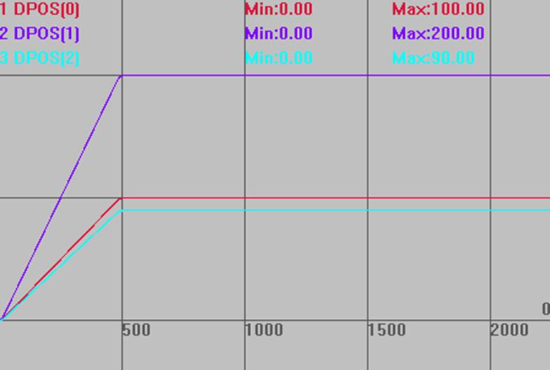

|
类型 |
多轴运动指令 |
|
描述 |
旋转的插补运动，保证在旋转台上是直线运动。
旋转功能是指工作平台在与XY平行的平面上旋转，旋转的正向与XY的正向要一致（右手法则）。 旋转的参数存储在TABLE表里面，依次存储R轴号，R轴一圈脉冲数，X轴号，Y轴号，X圆心，Y圆心。 自定义速度的连续插补运动可以使用SP后缀的指令，见*SP描述。
建议直接使用机械手的旋转台算法，详情查看《正运动机械手指令说明》的frame11/17。 |
|
语法 |
MOVE_TURNABS(tablenum,position1[,position2[,position3[,position4...]]]) tablenum：存储旋转参数的table编号 position1：第一个轴运动坐标 position2：下一个轴运动坐标 |
|
适用控制器 |
通用 |
|
例子 |
BASE(0,1,2) ATYPE=1,1,1 '设为脉冲轴类型 UNITS=100,100,100 DPOS=0,0,0 SPEED=100,100,100 '主轴速度 ACCEL=1000 ,1000,1000 '主轴加速度 DECEL=1000 ,1000,1000 '主轴减速度 TABLE(0, 3, 3600, 0,1, 0,0) '设置旋转台的参数 TRIGGER MOVE_TURNABS(0,100,200,90) '直线插补至目标位置 WAIT IDLE '等待运动停止
插补轨迹 DPOS(0)垂直刻度100 DPOS(1)垂直刻度100 DPOS(2)垂直刻度100  |
|
相关指令 |